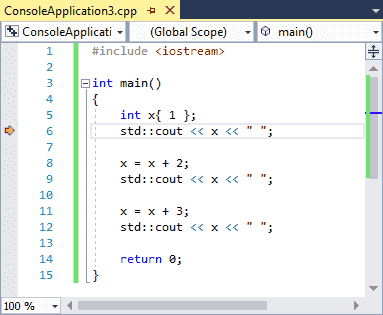
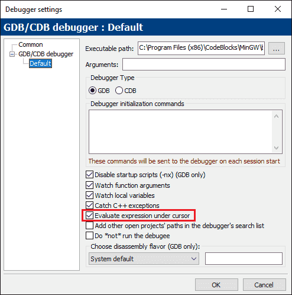
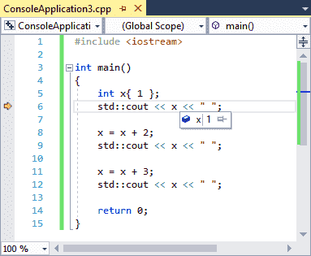
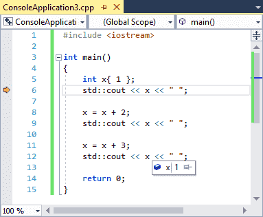
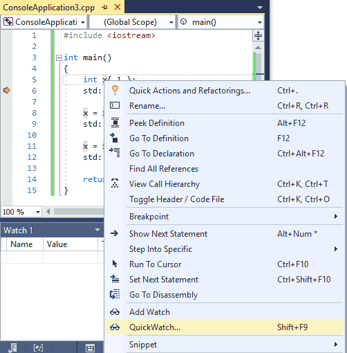
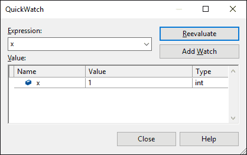
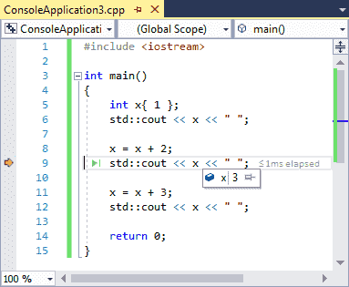
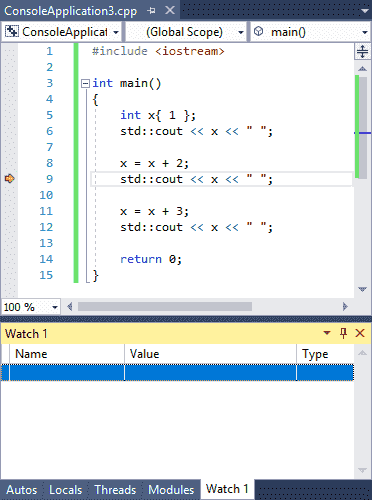
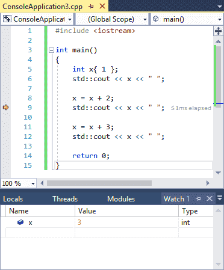

3.8 — 使用集成调试器：监视变量
在前面的课程（3.6 -- 使用集成调试器：逐步执行 和 3.7 -- 使用集成调试器：运行和断点），你已经学会了如何使用调试器来观察程序的执行路径。然而，单步执行程序只是调试器功能的一半。调试器还允许你在单步执行代码时检查变量的值，而无需修改代码。
与之前的课程一样，此处的示例将使用 Visual Studio —— 如果你使用的是不同的 IDE/调试器，命令名称可能略有不同，或位于不同的位置。
警告
如果你回头查看，请确保项目使用调试构建配置进行编译（详见 0.9 -- 配置编译器：构建配置 以了解更多信息）。如果你改用发布配置编译项目，调试器的功能可能无法正常工作。
监视变量
监视变量 是指在程序以调试模式运行时检查变量值的过程。大多数调试器都提供了多种方法来实现这一点。
让我们来看一个示例程序：
#include <iostream>
int main()
{
int x{ 1 };
std::cout << x << ' ';
x = x + 2;
std::cout << x << ' ';
x = x + 3;
std::cout << x << ' ';
return 0;
}
这是一个非常简单的示例程序——它打印数字 1、3 和 6。
首先， 运行到光标处 到第 6 行。

此时，变量 x 已经创建并用值 1 初始化，因此当我们检查 x 的值时，应该看到值 1。
检查像 x 这样的简单变量的值的最简单方法是将鼠标悬停在变量 x 上。一些现代调试器支持这种检查简单变量的方法，而且这是最直接的方法。
对于 Code::Blocks 用户
如果你使用的是 Code::Blocks，这个选项（莫名其妙地）默认是关闭的。让我们把它打开。首先，前往 设置菜单 > 调试器…。然后在 GDB/CDB 调试器节点，选择 默认 配置文件。最后，勾选标记为 计算光标下的表达式。

将鼠标悬停在第6行的变量x上，你应该会看到类似这样的内容：

请注意，你可以将鼠标悬停在任何变量x上，不仅仅是当前行上的那个。例如，如果将鼠标悬停在第12行的x上，我们会看到相同的值：

如果你使用的是Visual Studio，还可以使用QuickWatch。用鼠标突出显示变量名x，然后从右键菜单中选择“QuickWatch”。

这将弹出一个包含变量当前值的子窗口：

如果你打开了QuickWatch，就把它关掉吧。
现在让我们在单步执行程序时观察这个变量的变化。要么选择 step over 两次，或者 运行到光标处 到第9行。变量x现在应该具有值 3。检查它，确保它确实如此！

监视窗口
如果你想了解某个特定时间点的变量值，使用鼠标悬停或QuickWatch方法来检查变量是可行的，但对于随着代码运行而变化的变量值，这种方法并不特别适合，因为你必须不断地重新悬停或重新选择变量。
为了解决这个问题，所有现代集成调试器都提供了另一个功能，称为监视窗口。 监视窗口 是一个窗口，你可以在其中添加希望持续检查的变量，这些变量会随着你单步执行程序而更新。进入调试模式时，监视窗口可能已经出现在屏幕上，但如果没有，你可以通过IDE的窗口命令（通常位于“视图”或“调试”菜单中）将其调出。
适用于 Visual Studio 用户
在Visual Studio中，可以通过以下路径找到监视窗口： Debug 菜单 > Windows > Watch > Watch 1请注意，你必须处于调试模式才能启用此选项，所以 步入 首先运行你的程序。
这个窗口出现的位置（停靠在左侧、右侧或底部）可能有所不同。你可以通过拖动来更改其停靠位置。 监视 1 选项卡移至应用程序窗口的另一侧。
对于 Code::Blocks 用户
在 Code::Blocks 中，监视窗口可以在 调试菜单 > 调试窗口 > 监视。该窗口可能会以独立窗口形式出现。您可以通过将其拖拽到主窗口中将其停靠。
对于 VS Code 用户
在 VS Code 中，监视窗口在调试模式下出现，停靠在左侧调用堆栈上方。
您现在应该看到类似这样的内容：

监视窗口中可能已经包含一些内容，也可能为空。
通常有两种不同的方法将变量添加到监视窗口：
- 调出监视窗口，然后在监视窗口最左侧的列中输入您要监视的变量名称。
- 在代码窗口中，右键单击您要监视的变量，然后选择 Add Watch （Visual Studio）或 Watch x （将 x 替换为变量名称）（Code::Blocks）。
如果您尚未处于调试会话中且执行标记未在程序第 9 行，请启动新的调试会话并 运行到光标处 到第 9 行。
现在，继续将变量“x”添加到监视列表。您应该看到以下内容：

现在 step over 两次，或者 运行到光标处 到第 12 行，您应该看到 x 从...更改 3 切换到 6。
超出作用域的变量（例如，在已经返回调用者的函数内部的局部变量）会留在您的监视窗口中，但通常会标记为 “not available”，或者可能显示最后已知的值但呈灰色。如果变量重新进入作用域（例如，函数再次被调用），它的值将重新开始显示。因此，即使变量超出作用域，将它们留在监视窗口中也是可以的。
使用监视是在逐步执行程序时观察变量值随时间变化的最佳方法。
在被监视的变量上设置断点
某些调试器允许您在监视的变量上而不是在行上设置断点。这会导致程序在变量值发生变化时停止执行。
例如，在变量 x 上设置这样的断点将使调试器在执行第8行和第11行后停止（这是 x 值被更改）。
适用于 Visual Studio 用户
在Visual Studio中，请确保变量处于被监视状态。接下来， 步入 您的程序并转到监视窗口。右键单击变量并选择“Break when value changes”。
每次开始调试会话时，您都需要重新启用“Break when value changes”。
监视窗口也能计算表达式
监视窗口还允许您计算简单表达式。如果还没有， 运行到光标处 到第12行。然后尝试输入 x + 2 到监视窗口中，看看会发生什么（它应该计算为8）。
您还可以突出显示代码中的表达式，然后通过悬停或通过右键单击上下文菜单将其添加到监视窗口来检查该表达式的值。
警告
监视表达式中的标识符将计算为其当前值。如果您想知道代码中表达式的实际计算值， 运行到光标处 首先执行到它，以便所有标识符都具有正确的值。
局部监视
由于在调试时检查函数内部局部变量的值很常见，许多调试器会提供某种方式来快速查看 所有 作用域中局部变量的值。
适用于 Visual Studio 用户
在 Visual Studio 中，你可以在 “局部变量” 窗口中查看，该窗口位于 “调试”菜单 > “窗口” > “局部变量”。请注意，你必须处于调试会话中才能激活此窗口。
对于 Code::Blocks 用户
在 Code::Blocks 中，它集成到了 “监视” 窗口中，位于 “局部变量” 节点。如果看不到任何内容，可能是没有局部变量，或者你需要展开该节点。
对于 VS Code 用户
在 VS Code 中，局部变量的值可以在 “变量” 部分中找到，该部分在调试模式下停靠在左侧。你可能需要展开 “局部变量” 节点。
如果你只是想查看局部变量的值，请先检查 “局部变量” 窗口。它应该已经在那里了。